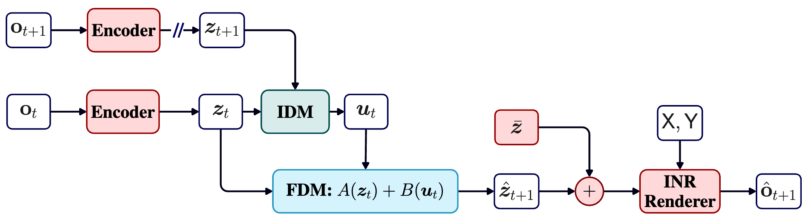
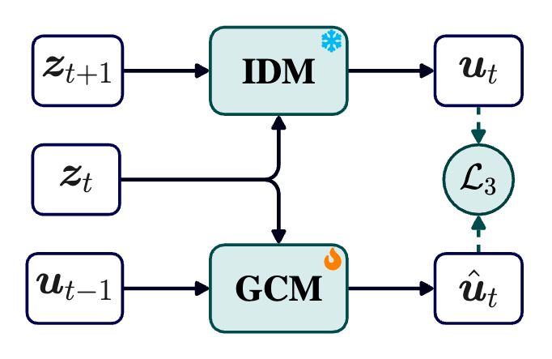
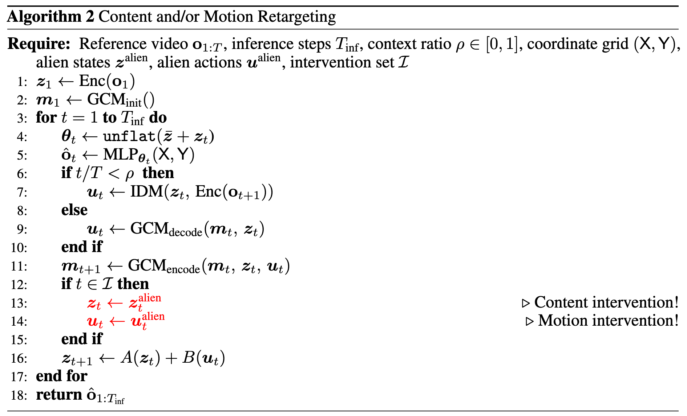
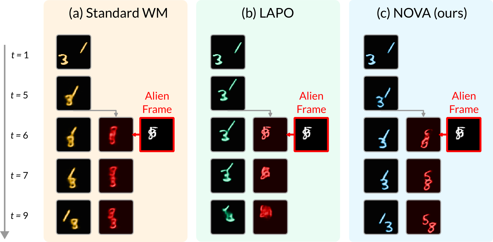
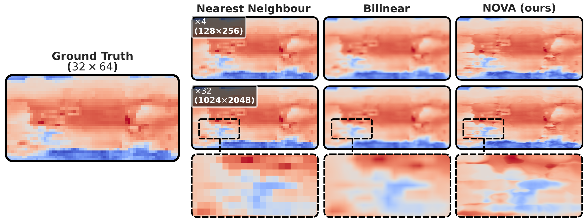

Downloading quantized ONNX models (~32 MB) — runs fully locally in your browser.
Training world models on vast quantities of unlabelled videos is a critical step toward fully autonomous intelligence. However, the prevailing paradigm of encoding raw pixels into opaque latent spaces and relying on heavy decoders for reconstruction leaves these models computationally expensive and uninterpretable. We address this problem by introducing NOVA, a world modelling framework that represents the system state as the weights and biases of an auxiliary coordinate-based implicit neural representation (INR). This structured representation is analytically rendered, which eliminates the decoder bottleneck while conferring compactness, portability, and zero-shot super-resolution. Furthermore, like most latent action models, NOVA can be distilled into a context-dependent video generator via an action-matching objective. Surprisingly, without resorting to auxiliary losses or adversarial objectives, can disentangle structural scene components such as background, foreground, and inter-frame motion, enabling users to edit either content or dynamics without compromising the other. We validate our framework on several challenging datasets, achieving strong controllable forecasting while operating on a single consumer GPU at 40M parameters. Ultimately, structured representations like INRs not only enhance our understanding of latent dynamics but also pave the way for immersive and customisable virtual experiences.
NOVA overcomes these issues via an analytical INR renderer, additive latent decomposition, and stable dynamics.
NOVA evolves the hidden state directly in the weight space of an INR, with its additive dynamics inducing content/motion disentanglement. The framework eliminates the traditional decoder, since the continuous INR renders pixels analytically from latent weights, enabling parameter efficiency, portability, and resolution flexibility. This weight-space world model can be distilled into a video generation model by training a control module to imitate previously learned actions.

NOVA architecture: The Encoder maps frames to weight-space offsets. During training, the IDM infers latent action from consecutive encoded states, then the FDM predicts the next weight offset. Unlike conventional decoders, the Renderer is not trained; it is an analytical function that maps a coordinate grid to pixel values via an implicit neural representation (INR).

GCM training: The Generative Control Model (GCM) distills IDM into an autoregressive generator, enabling video prediction without access to future frames.

Content/motion retargeting: Algorithm for zero-shot intervention on either state, action, or both during inference.
Additive decomposition induces a dissentaglement of background, identity, and dynamics. Unlike existing latent action models, NOVA offers users with the possibility to edit content without affecting motion, and vice-versa.

Because the INR is a continuous function, NOVA can be rendered at any resolution without retraining. We apply a Nyquist-Shannon frequency mask to Fourier features during inference, suppressing aliasing artefacts. Below, we see a WeatherBench frame upsampled ×32; NOVA preserves macro‑structure and avoids spurious high-frequency noise.

Explore NOVA's three video editing capabilities live in your browser. These playgrounds run the Generative Control Model (GCM) inference pipeline — the same autoregressive video generator described in Algorithm 2 of the paper — powered by quantised JAX models via ONNX Runtime Web. These demos use the same trained weights from the paper's Moving MNIST experiment, but operate under three constraints that affect quality:
Draw two initial digits and press ▶ Restart Simulation to begin. Then draw any two "alien" digits in the right canvas and click 🔄 Replace Content. The model should swap the INR latent state while keeping the motion intact.
Draw a scene with two digits, then press ▶ Restart Simulation. While the simulation is running, click anywhere on the output canvas to redirect one of the digits toward that location.
Draw two initial digits in each canvas. Press ▶ Run Transfer Simulation to start both simulations. At any moment, click ✨ Start Retargeting to inject Video A's motion into Video B.
@article{nzoyem2026render,
title={Render, Don't Decode: Weight-Space World Models with Latent Structural Disentanglement},
author={Roussel Desmond Nzoyem and Mauro Comi},
year={2026},
eprint={2605.06298},
archivePrefix={arXiv},
primaryClass={cs.CV}
}
This work was supported by the University of Manchester and the University of Bristol. We thank the open-source community for the various tools and datasets that made the development of NOVA possible.